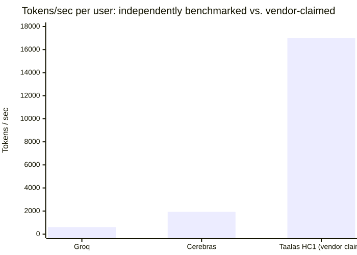
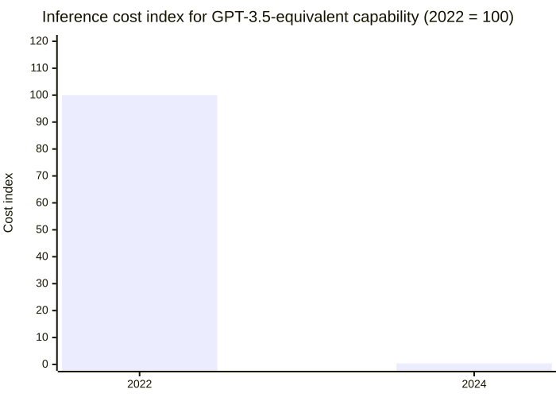

3 — The chip that ate the model
Taalas didn't make inference faster. They stopped running the model in software. At their HC1 launch, the weights for Llama 3.1 8B weren't loaded onto a chip — they were etched into one, as an application-specific circuit rather than a general-purpose GPU running a general-purpose program.
Their own claim is 17,000 tokens per second, per user — worth stating precisely, because the number that's actually circulating in the coverage is "~15k," and that figure traces back to one blogger's informal eyeball estimate, not to anything Taalas themselves stated. Alongside the throughput number, Taalas claims roughly 20x lower build cost and roughly 10x lower power draw per rack compared with running the same model on general-purpose silicon.
This isn't a garage project. The founders came out of Tenstorrent, AMD, and Nvidia — real silicon pedigree, not a software team that decided to try hardware. The company has raised $219M total. And unlike most hardware announcements, there's a live public demo you can actually go try: chatjimmy.ai. It's worth being honest about what you're looking at when you do — every performance number attached to HC1 is Taalas's own, and both Next Platform and Heise explicitly note in their coverage that none of it has been independently verified yet.

Taalas is the most extreme point on a spectrum that already includes Groq and Cerebras — and the only one of the three without independent numbers behind it yet.
No independent benchmark exists yet, and the more interesting problem isn't verification — it's obsolescence. When the model updates, the silicon doesn't. Etching weights into a chip means every model revision is a new fabrication run, not a weekend deploy. Meta, whose own model Taalas chose to hardwire for the demo, didn't sign on as a customer — they doubled down on Nvidia instead, which is about as sharp a review as a competitor can give without saying a word about it directly.
Taalas sits at one extreme of a spectrum, not a category of its own. Groq runs at roughly 609 tokens per second per user, independently benchmarked. Cerebras runs at roughly 1,936. Both are still general-enough architectures that can be pointed at a new model. Taalas trades away all of that flexibility for a further order of magnitude of speed — the bet is that for a narrow enough set of high-volume, stable workloads, never having to reload a model is worth never being able to change one quickly. Nvidia's own move in December 2025, reportedly taking a roughly $20B stake in Groq, reads like tacit acknowledgment that this whole spectrum — not just Taalas's end of it — is worth taking seriously.
There's a software-side version of the exact same story, and it's arguably moving faster than the hardware one. DeepSeek's January 2025 release landed 20 to 50 times cheaper than OpenAI's o1-preview for comparable output. Stanford's AI Index puts the broader trend at roughly a 280x collapse in the cost of reaching GPT-3.5-equivalent capability between 2022 and 2024. Silicon that never reloads and software that gets radically cheaper are the same pressure showing up in two different layers of the stack: the price of a token is falling everywhere you look, and everyone building infrastructure around today's price is building on a number that's already stale.

Same pressure, different layer: hardware trades flexibility for speed, software just gets radically cheaper.
None of this means bet your infrastructure on unaudited vendor numbers, and it doesn't mean etched silicon is coming for your stack next quarter either. It means the floor under "how much does a token cost" keeps moving, on both the hardware and software side, faster than most teams' pricing assumptions do. Whatever you're optimizing for today — latency, cost per token, power per rack — check the number again in six months. It probably isn't the same number.